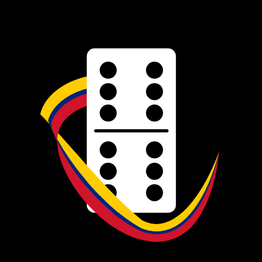

Domino Venezolano
La libreta digital del dominó criollo
Adiós lápiz, adiós servilleta. Anota cada mano, la app lleva la cuenta hasta 100, recuerda quién sale y guarda el marcador de revanchas. Sin cuentas, sin anuncios y sin conexión.
Preguntas frecuentes
¿Cómo anoto una mano?
Toca el panel del equipo que ganó la mano y escribe los puntos.
¿Y si fue tranca?
Al anotar, activa «Fue tranca». La mano queda marcada en la libreta.
Me equivoqué al anotar.
Usa «Borrar última». La app te pide confirmación antes de borrarla.
¿Se pierde la partida si cierro la app?
No. La partida y el marcador de revanchas se guardan en tu teléfono.
¿Cuántos puntos acepta por mano?
De 0 a 168, que es la suma de todas las fichas de un dominó doble seis.
Contacto
¿Encontraste un error o tienes una idea? Escribe a [CORREO PENDIENTE] o abre un aviso en GitHub.